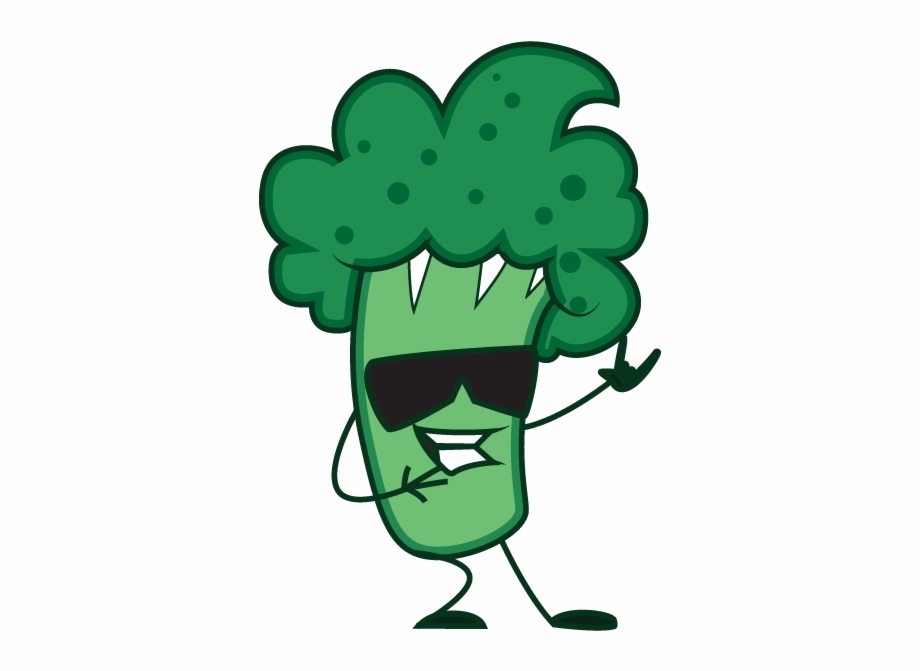

<mat-toolbar color = "primary" style ="height: 60px;">
    <mat-toolbar-row>
      Didactic Broccoli
      <span class=example-spacer></span>
      
    </mat-toolbar-row>
</mat-toolbar>


<div style="width: 100%; text-align: center; padding-top: 100px;">
    <button [routerLink]="['/main']" class="curve" mat-flat-button color = "primary">Her</button><br>
    <p></p>
    <button [routerLink]="['/main2']" class="curve" mat-flat-button color = "primary">Him</button>
</div>
  
